- Superbad (2007)
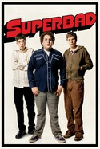
- Airplane! (1980)
- The Big Lebowski (1998)
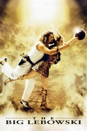
- Scott Pilgrim vs. the World (2010)
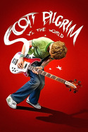
- The Tale of Fedot, the Shooter (1988)
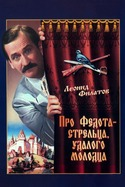
- Radio Day (2008)
- Elections Day (2007)
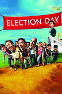
- Dogma (1999)
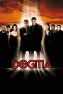
- Burn After Reading (2008)
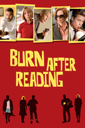
- The Cabin in the Woods (2011)
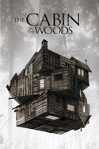
- This Is the End (2013)
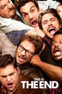
- Your Highness (2011)
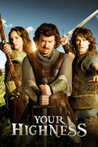
- Pineapple Express (2008)
- Riders of Justice (2020)
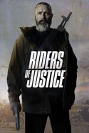
- Postal (2007)
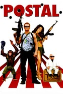
- What We Do in the Shadows (2014)
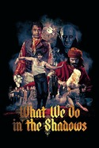
- 21 Jump Street (2012)
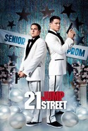
- 22 Jump Street (2014)
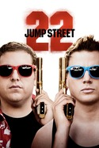
- Observe and Report (2009)
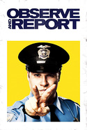
- MacGruber (2010)
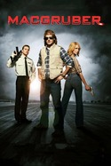
- Movie 43 (2013)
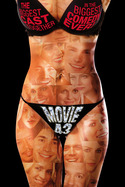
- Heat (1995)
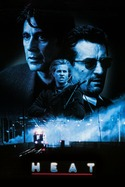
- The Dark Knight (2008)
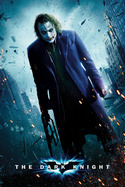
- Hardcore Henry (2015)
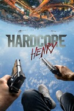
- Brother (1997)
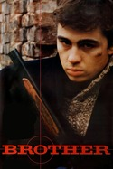
- The Man from Nowhere (2010)
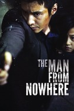
- The Raid (2011)
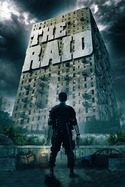
- Sicario (2015)
- Death Proof (2007)
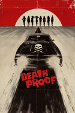
- Train to Busan (2016)
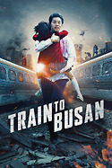
- End of Watch (2012)
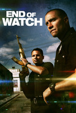
- Battle Royale (2000)
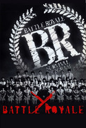
- Brother (2000)
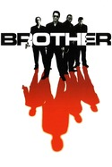
- Sicario: Day of the Soldado (2018)
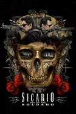
- Wind River (2017)
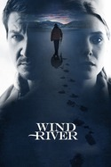
- The Driver (1978)
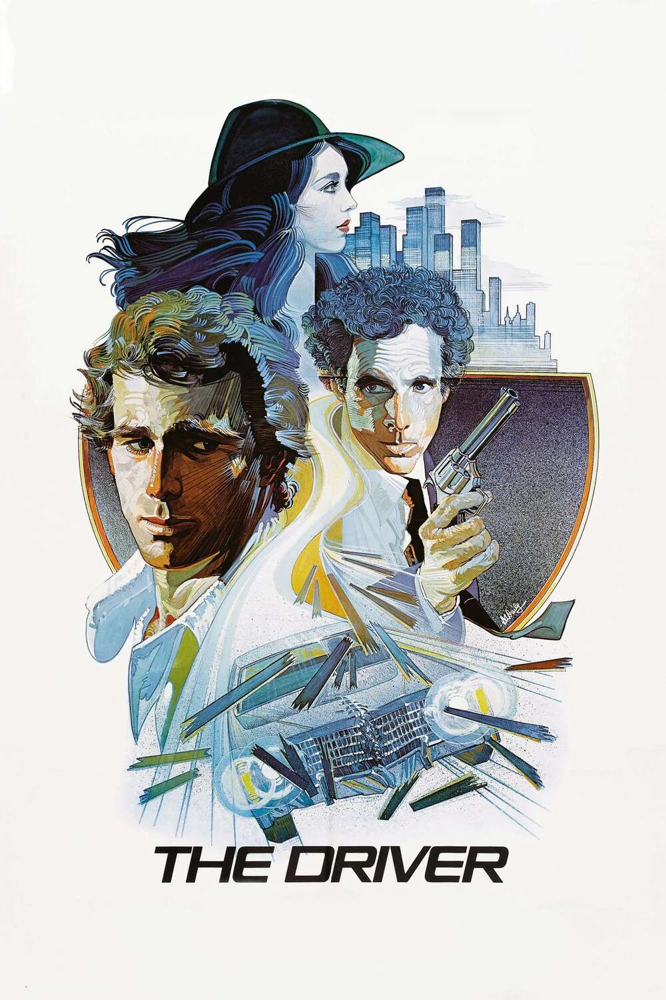
- The Chaser (2008)
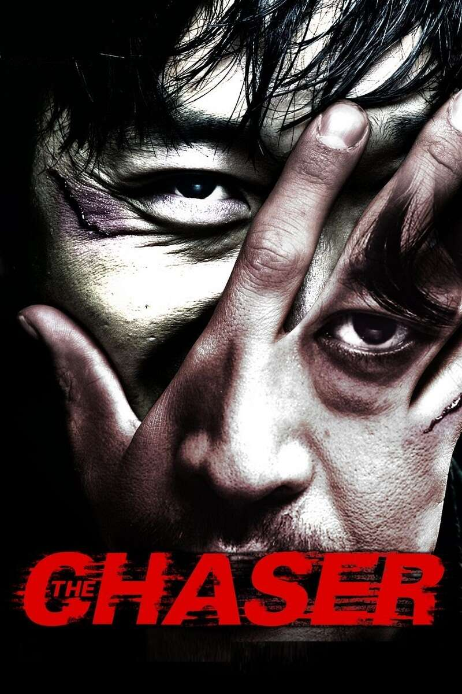
- Sherlock Holmes and Dr. Watson: Acquaintance (1980)
- Willy Wonka & the Chocolate Factory (1971)
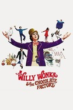
- Spirited Away (2001)
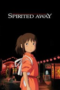
- Clerks (1994)
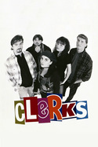
- mid90s (2018)
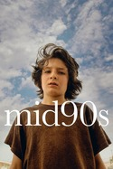
- Amélie (2001)
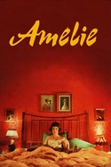
- Submarine (2010)
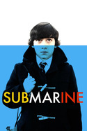
- Inside Llewyn Davis (2013)
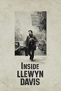
- Joker (2019)
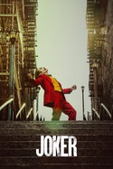
- And Here's What's Happening to Me (2012)
- The Practice of Beauty (2011)
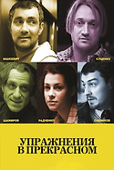
- Love and Pigeons (1985)
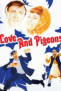
- Moscow Does Not Believe in Tears (1980)
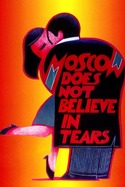
- Afonya (1975)
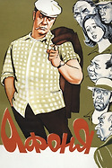
- Mirror for a Hero (1987)
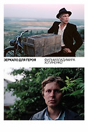
- The Girls (1962)
- The Very Same Munchhausen (1979)
- The White Sun of the Desert (1969)
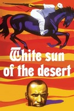
- The Chairman (1964)
- Detour (1945)
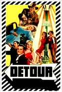
- The Big Sleep (1946)
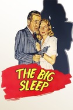
- Kiss Me Deadly (1955)
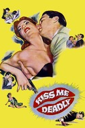
- Chinatown (1974)
- Metropolis (1927)
- A Clockwork Orange (1971)
- The Maltese Falcon (1941)
- Blade Runner (1982)
- Akira (1988)
- Tetsuo: The Iron Man (1989)
- Ghost in the Shell (1995)
- Heavy Metal (1981)
- The Fifth Element (1997)
- World on a Wire (1973)
- Hackers (1995)
- Dark City (1998)
- The Matrix (1999)
- Battleship Potemkin (1925)
- War and Peace (1967)
- Barry Lyndon (1975)
- Come and See (1985)
- 2001: A Space Odyssey (1968)
- The Lord of the Rings: The Two Towers (2002)
- The Shield and the Sword (1968)
- Seventeen Moments of Spring (1973)
- The Fall (2006)
- Art & Copy (2009)
- Cosmos (2014)
- It Might Get Loud (2008)
- Seven Ages of Rock (2007)
- The Joy of the Guitar Riff (2014)
- Bill Bailey's Remarkable Guide to the Orchestra (2009)
- The Making of Plastic Beach (2010)